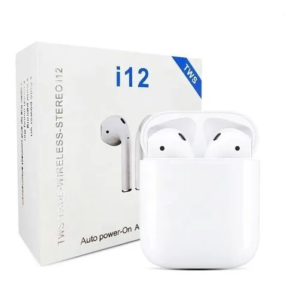

Notebook
La notebook que utilizo para programar es una HP 240 G7, muy completa para todo lo que necesito en mi día a día.

La notebook que utilizo para programar es una HP 240 G7, muy completa para todo lo que necesito en mi día a día.
Actualmente además de la pantalla de mi notebook, utilizo como monitor principal un Philips 24PHG4100/77, que me da una calidad de imagen buena, y el tamaño me viene muy bien

Para escuchar desde música, hasta videos de programación, o las reuniones utilizo los inalámbricos I12 TWS, para mí maravillosos, en relación calidad-precio.
Como la mayoria de mis perifericos, estos son inalámbricos, y para esto confio 100% en logitech con el mouse M170 en combo con el teclado yr-0036, con un solo adaptador usb controlo ambos!

iconos de reacción